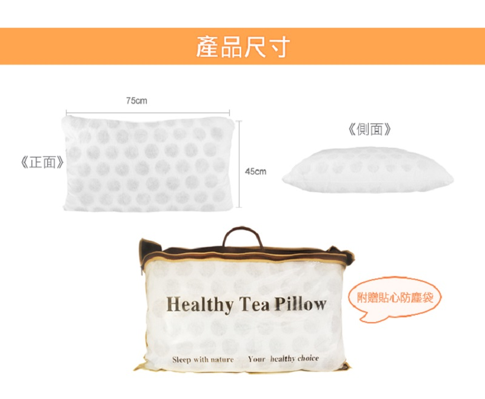

常香健品牌的緣起:
劉振隆先生1987年創立弘道實業有限公司:振隆先生的父親為警察,當時警察收入極為微薄.所以劉振隆先生畢業於台北商專會計夜間部,由於小時候很苦,連兄弟姊妹的學費都是振隆先生到處籌錢幫忙借學費,後來不想看人臉色,去念夜間部半工半讀,人生大半輩子都在兩岸拚經濟,因為家中太多人需要照顧. 振隆先生公司養大了整個劉家三姊妹花,同時也幫忙了整個劉氏家族.好景不常,身為二姊的劉心琳視覺設計師,在高中時期,劉媽媽突然得了絕症,突然驟逝.振隆扛著擔子一個人養三個女兒,同時當嚴父也當慈母.在振隆的教導下,三姊妹依舊保持超樂觀的心態,持續活在這世界上做出很多不為人知的善良的事情.振隆在國外的工廠事業也慢走上軌道,甚至做到世界上最大的相關鰻魚器材的塑膠射出工廠,價值超過十億新台幣.結果人生開了一個大玩笑,工廠居然因為有人抽菸導致爆炸燒掉了!振隆先生損失無法估計,也導致開始撤退台灣.結果更慘的事情還沒結束;發生在北投明德火災當天出動了英勇的消防隊員122人的救火隊的火災,2019/8/13二姊心琳跟三妹心琪雙雙在這場大火被燒得面目全非,怵目驚心,幾乎等同於焦屍,死狀悽慘.這天這兩位美麗的姊妹花,在太多事情沒有完成之下,姐姐還沒來的及結婚,妹妹還留下一個一歲的小女兒嬰兒.就這樣去當天使了.
常香健為劉心琳設計師在2007/04/04首次申請,在2008/06/01完成註冊.這就是常香健的由來.常香健的各種茶葉相關商品經過多次的研發還有各種的專利研究.
這就是常香健品牌的由來.
尤其是72歲的阿伯一拐一拐常常扛著常香健100袋的產品到處去兜售,那有三十公斤,我幫忙搬過,自己都有點喘不過氣來,阿伯72歲了,拖著兩箱30公斤的茶葉產品.我想到朱自清的背影,我都能說劉振隆的背影比朱自清還要辛酸,一步一步很艱辛的踏出每一個可以兜售的地方.我只能說朱自清的背影只是拿兩顆橘子而已算甚麼?我親愛的心琳爸,劉振隆的背影才是貨真價實.我走上這條路,我不敢奢望,劉心琳姊姊這個牌子能讓大家知道,至少大家知道,我們做的事情,是為社會有貢獻的,這樣我就心滿意足了.